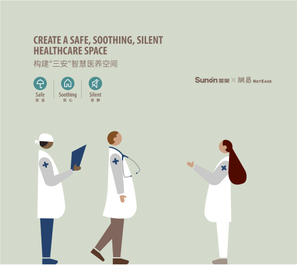
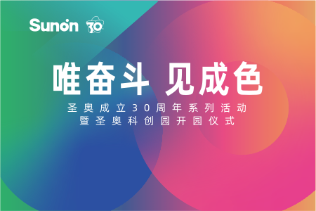

2020 / SUNON
Healthcare Furniture Exhibition
Three healthcare settings help customers understand the product range.
View project ↗B2B BRAND EXPERIENCE · 2019–2022
Exhibitions & Physical Brand Experiences
Turning the corporate brand and product range into visuals people can see, understand and experience. These healthcare exhibition, anniversary event and retail display projects show how brand communication becomes a physical experience.
My roleExhibition Graphics · Event Communication · Display Design & Delivery

THREE PROJECTS · THREE BUSINESS CONTEXTS

2020 / SUNON
Three healthcare settings help customers understand the product range.
View project ↗
2021 / SUNON
A consistent anniversary identity across the event and its communication.
View project ↗
2020 / SUNON
Turn a product display into a place to try the seating, pause and take photos.
View project ↗B2B BRAND & DIGITAL EXPERIENCE
My work also covered domestic and international websites, product launch pages and e-commerce brand visuals. Exhibitions, events and digital channels together shaped my B2B brand design practice.
View full experience ↗